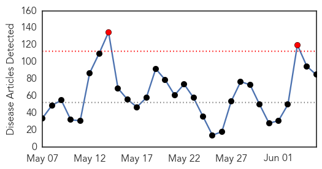
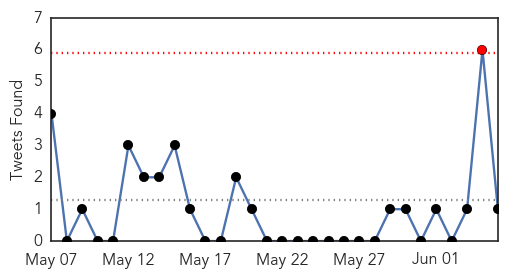
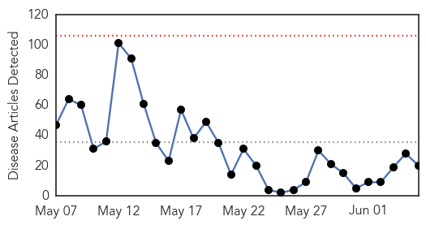

Unknown
30-Day Web Trend
2 alerts, 0 warnings

30-Day Twitter Trend
1 alerts, 0 warnings

Article Locations

Article Confidences

Top Articles:
- 0.999
- Scientists question Saudi openness on deadly MERS virus outbreak
- 0.999
- Saudi ‘openness’ on Mers questioned
- 0.998
- Mers fatalities hugely under reported
- 0.998
- Mers fatalities hugely under reported
- 0.997
- WHO, experts raise questions about newly revealed Saudi MERS cases
- 0.997
- 688 Cases in Saudi Arabia, Nation Fires Deputy Health Minister
- 0.992
- Qatar- No new cases of MERS in Qatar: SCH
- 0.987
- DOD Tracking Middle East Respiratory Syndrome Virus
- 0.985
- Saudi Arabia sacks minister criticised over handling of MERS
- 0.968
- Texas mad cow disease: Bovine infection death is 4th U.S. case ever
- 0.967
- United States Records Fourth Death From Mad Cow Disease
- 0.964
- Texas Patient Dies Of Brain Disorder Linked To Mad Cow Disease, Officials Say
- 0.960
- KUNA : No new MERS cases in Kuwait
- 0.953
- Mad cow disease-related death confirmed in Texas
- 0.949
- Mad Cow Disease-Related Death Confirmed In Texas
- 0.940
- Camels Confirmed As a Source of MERS Virus
- 0.934
- Balkans floods: emergency supplies arrive - Bosnia and Herzegovina
- 0.933
- Health officials: No Texas public health concerns with recent mad-cow death
- 0.917
- Chicago Tribune
- 0.917
- Chicago Tribune
- 0.917
- Chicago Tribune
- 0.917
- Chicago Tribune
- 0.917
- Chicago Tribune
- 0.917
- Chicago Tribune
- 0.917
- Chicago Tribune
- 0.917
- Chicago Tribune
- 0.917
- Chicago Tribune
- 0.917
- Chicago Tribune
- 0.917
- Chicago Tribune
- 0.917
- Chicago Tribune
- 0.917
- Chicago Tribune
- 0.917
- Chicago Tribune
- 0.917
- Chicago Tribune
- 0.917
- Chicago Tribune
- 0.917
- Chicago Tribune
- 0.917
- Chicago Tribune
- 0.917
- Chicago Tribune
- 0.917
- Chicago Tribune
- 0.917
- Chicago Tribune
- 0.917
- Chicago Tribune
- 0.917
- Chicago Tribune
- 0.917
- Chicago Tribune
- 0.917
- Chicago Tribune
- 0.917
- Chicago Tribune
- 0.908
- Behind norovirus outbreaks
- 0.901
- Salt Lake City News, Sports, Archive
- 0.899
- Four tested after Beenleigh Hendra outbreak
- 0.896
- Legionnaires' patients in UAB Hospital outbreak retain lawyer
- 0.893
- Scientists question Saudi openness on deadly MERS virus outbreak
- 0.866
- Variant Creutzfeldt-Jakob Disease (vCJD)
Showing top 50 articles...
Top Tweets:
- 0.592
- But even a single super-shedder of the virus - in its current form - does not a pandemic make.
- 0.575
- Saudi Arabia to test camels for MERS virus http://t.co/SmHQm1K52W via
MERS
30-Day Web Trend
0 alerts, 0 warnings

30-Day Twitter Trend
1 alerts, 0 warnings

Article Locations
Article Confidences

Top Articles:
- 1.000
- A Scary New Disease Just Got Scarier
- 0.999
- SCH issues guidelines for Qatar pilgrims
- 0.999
- MERS Case Count Jumps in Saudi Arabia
- 0.999
- Saudi Arabia revises MERS infection numbers upward; 688 infections and 282 deaths confirmed
- 0.998
- Saudi MERS data review shows big jump in number of deaths
- 0.997
- Study Confirms MERS Spreads from Camels to People
- 0.997
- Saudi Study Strengthens Case Against Camels In MERS Outbreak
- 0.996
- As MERS cases keep coming, Saudis to test camels
- 0.994
- Four more MERS cases confirmed in Saudi Arabia
- 0.993
- Saudi Arabia To Test Camels And Livestock For MERS
- 0.985
- Fakeih: 80% drop in MERS infections
- 0.957
- 80% drop in coronavirus cases in six weeks, says FakeihHealthcare
- 0.954
- Medical journal links Mers to camels, bats
- 0.953
- the edge of knowledge
- 0.948
- Mers not an issue for Saudi’s USD16bn religious tourism industryTravel & Tourism
- 0.943
- Mers, Sars victims of “bad journalism”
- 0.940
- Camel snot blamed for MERS virus
- 0.870
- Saudi Arabia taking measures for pilgrims' safety - Emirates 24
- 0.823
- Medical practitioners form 28pct of MERS cases in Saudi Arabia - minister
- 0.567
- USDA Announces Funding, Issues Federal Order to Combat PEDv
Top Tweets:
-
No tweets found for Jun 05, 2014